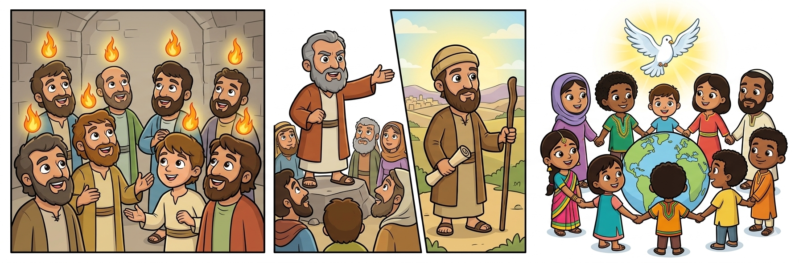
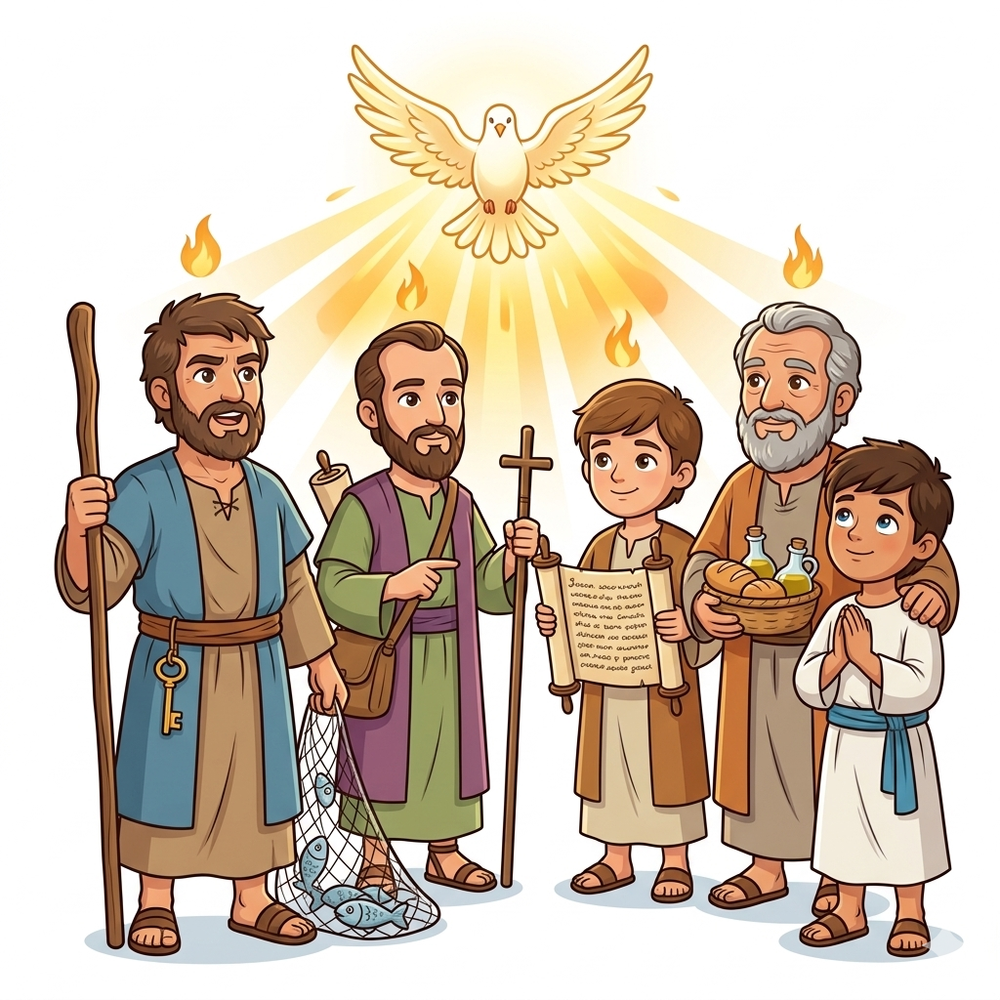
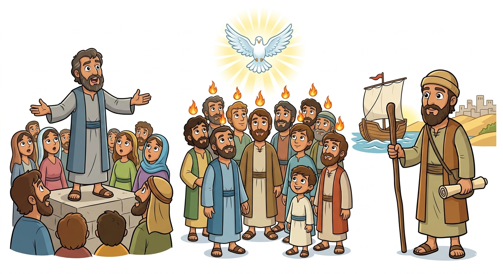
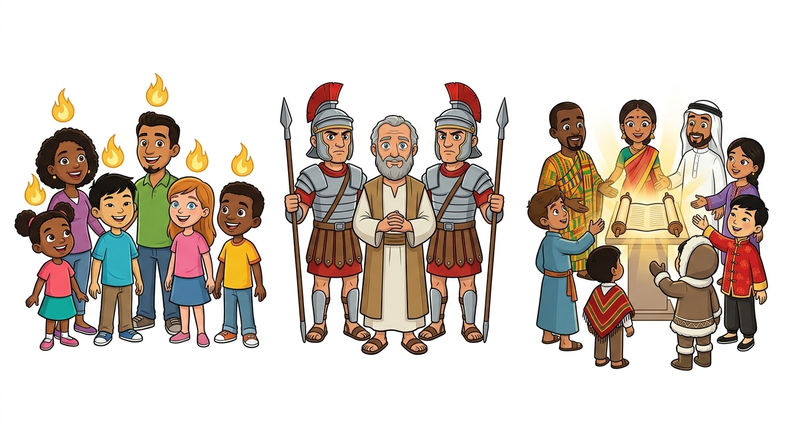
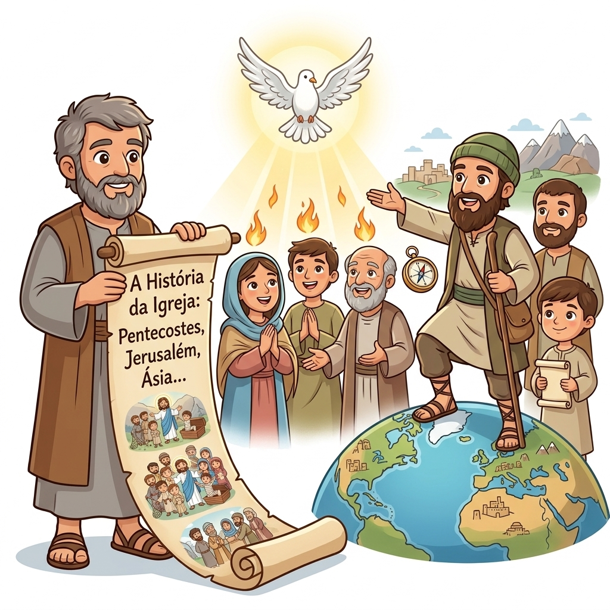
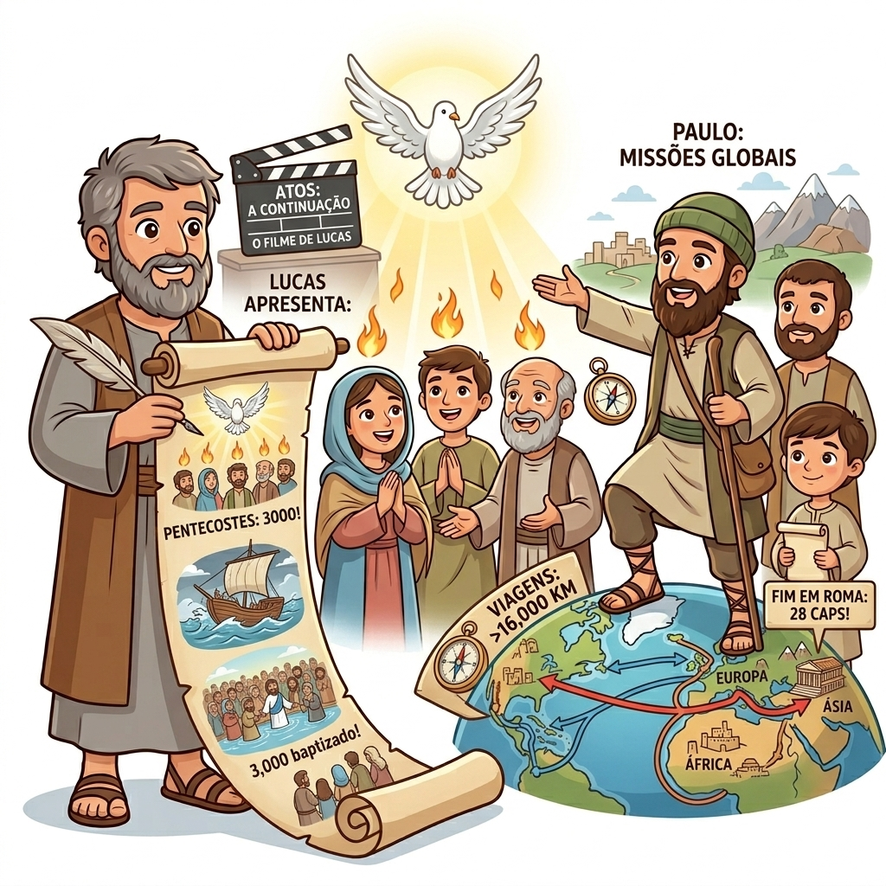

O Poder do Espírito Santo — Um Resumo Visual para Crianças
Quando o Espírito desceu com línguas de fogo,
Os discípulos ficaram cheios de um poder novo!
Falaram em outras línguas, pregaram com ousadia,
E três mil pessoas creram naquele dia!
📖 Atos 2:1-4, 41
Pedro, que negou Jesus com tanto medo,
Agora pregava sem nenhum segredo!
Paulo viajou por terras tão distantes,
Levando o evangelho a todos os instantes!
📖 Atos 4:13, 20
De Jerusalém até os confins da terra,
A igreja crescia, não havia guerra!
Judeus e gentios, todos eram irmãos,
Unidos em Cristo, de corações e mãos!
📖 Atos 1:8; 10:34-35

O pescador corajoso que pregou no Pentecostes e viu milhares se converterem!
O perseguidor que se tornou o maior missionário, levando Jesus ao mundo inteiro!
O poder de Deus que encheu os discípulos de coragem, sabedoria e ousadia!
Heróis da fé que pregaram, curaram e deram suas vidas por Jesus!
Depois que Jesus subiu ao céu, Ele enviou o Espírito Santo! Os discípulos estavam reunidos quando de repente veio um vento forte e línguas de fogo apareceram sobre eles. Ficaram cheios do poder de Deus!
Pedro pregou com tanta coragem que 3 mil pessoas creram em Jesus! Os apóstolos faziam milagres, curavam doentes e a igreja crescia todos os dias.
Paulo fez três grandes viagens missionárias, levando o evangelho a cidades distantes. Enfrentou perigos, mas nunca desistiu de falar de Jesus!


Atos nos ensina que o mesmo Espírito Santo que encheu os discípulos está disponível para nós hoje! Ele nos dá coragem para falar de Jesus e poder para viver uma vida que agrada a Deus.
Mesmo quando foram presos, ameaçados e perseguidos, os apóstolos continuaram pregando com amor e coragem. Eles nos mostram que vale a pena seguir Jesus, não importa o que aconteça!
Atos mostra que o evangelho é para todo mundo — não importa de onde você é ou quem você é. Jesus ama a todos e quer que todos O conheçam!
Atos é como um diário que mostra como tudo começou! Como a igreja nasceu, cresceu e se espalhou pelo mundo inteiro.
O livro revela como o Espírito Santo guiou, fortaleceu e capacitou os primeiros cristãos a fazer coisas incríveis para Deus!
Atos nos ensina que somos chamados a levar o evangelho a todas as nações, começando onde estamos e indo até os confins da terra!


🎬 O livro de Atos é como a "continuação" do Evangelho de Lucas! Lucas escreveu os dois livros para contar toda a história de Jesus e da igreja primitiva.
✈️ Paulo fez três viagens missionárias incríveis! Ele viajou mais de 16.000 quilômetros a pé e de barco, enfrentou naufrágios, prisões e perigos — tudo para levar Jesus às nações!
🔢 No dia de Pentecostes, 3.000 pessoas foram batizadas! Foi o maior batismo coletivo da história da igreja primitiva!
🌟 Atos tem 28 capítulos e termina com Paulo pregando em Roma — mostrando que o evangelho chegou ao centro do mundo conhecido!
© 2025 - Trilho Kids
Desenvolvido com ❤️ para crianças